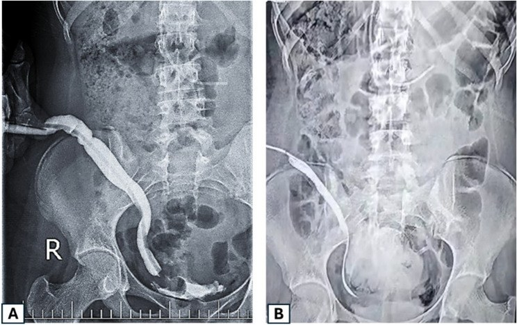
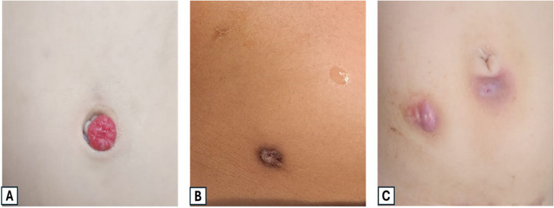

3001 — Hẹp lỗ thông Mitrofanoff ở trẻ / Mitrofanoff stomal stenosis in children
Tags: pattern:hep pattern:hep-lo-thong vung:thanh-bung vung:bang-quang protocol:channelogram protocol:VCUG
Mức chắc chắn (certainty): tổng hợp y văn (literature synthesis) — số liệu chính từ 1 loạt mổ tiến cứu–hồi cứu 44 trẻ so sánh ống niệu quản vs ống ruột thừa (Mansy M et al., BMC Surg 2026, PMC12933896) và 1 tổng quan kỹ thuật–kết cục ở người trưởng thành có tổng hợp nhiều loạt (Alsulihem A & Corcos J, Urol Ann 2022, PMC9472303); phần hình ảnh dựa trên chính các hình trong 2 bài đó. Số nào nguồn không nêu thì ghi "chưa rõ", không bịa.
1. Tổng quan bệnh học – cơ chế hình ảnh
- Định nghĩa (nguyên lý Mitrofanoff): tạo một ống thông tiểu có kiểm soát (continent catheterizable channel — CCC) nối bàng quang với da thành bụng, dùng một đoạn ruột — thường là ruột thừa (appendicovesicostomy) — cấy vào bàng quang theo kiểu van lật niêm mạc dưới niêm (submucosal tunneled flap valve). Đoạn ruột thừa được lật ngược, đầu gốc cắm vào bàng quang, đầu ngọn đưa ra da. Chỉ định: bàng quang thần kinh (thoát vị tủy–màng tủy), phức hợp lộn bàng quang–niệu đạo, hội chứng bụng nhão (prune belly), van niệu đạo sau, hoặc trẻ không thể đặt sonde qua niệu đạo (béo phì, dị tật, ghép, khuyết tật vận động).
- "Hẹp lỗ thông" (stomal stenosis) là gì: hẹp lòng ống thông — thường ở lớp da (skin level), nhưng có thể ở mức cân (fascia) hoặc mức bàng quang. Ngưỡng thực hành: hẹp khi trẻ phải dùng sonde nhỏ hơn cỡ thường dùng, đau/chảy máu khi đặt, hoặc không đưa được sonde qua dù đã thử đúng tư thế.
- TẠI SAO hẹp lại hay gặp ở ĐÚNG lỗ thông: lỗ thông là nơi duy nhất của ống thông chịu 3 lực cùng lúc — (1) thiếu máu cục bộ do căng/thắt mạc treo ruột thừa hoặc do phải cắt đôi niệu quản ở 2 điểm (nguồn nuôi mạch bị tổn thương), (2) viêm mạn do ẩm ướt + nước tiểu, (3) chấn thương cơ học lặp lại của sonde. Sẹo xơ co → vòng hẹp. Vì vậy nguồn nhấn mạnh để sonde lưu 2–3 tuần sau mổ cho niêm mạc biểu mô hóa và chống hẹp (Mansy M et al. 2026).
- TẠI SAO ống niệu quản hẹp ít hơn ống ruột thừa — và tại sao vẫn không nên mặc định chọn niệu quản: ống niệu quản hẹp 9,1% (1/11) so với 18,2% (6/33) ở ống ruột thừa (P = 0,003), nhưng ống niệu quản lại hạt granuloma nhiều hơn: 27,3% (3/11) vs 9,1% (3/33) (P = 0,043) và cần can thiệp lần hai 45,5% vs 30,3% (Mansy M et al. 2026). Đọc bảng này đúng cách: "hẹp" không phải biến chứng duy nhất, và tỉ lệ hẹp không đồng nghĩa ít phải mổ lại.
- Dịch tễ định lượng (vì sao phải biết trước khi tư vấn gia đình): nguy cơ hẹp trong các loạt dao động 6,8%–54%; tỉ lệ mổ lại vì biến chứng 20%–67% (Alsulihem A & Corcos J 2022). Chỉnh sửa ở mức da (skin-level revision) chiếm tới 41% số bệnh nhân trong một loạt lớn. Nghĩa là: hẹp lỗ thông là biến chứng phổ biến nhất của phẫu thuật này, và phần lớn xử lý được bằng can thiệp nhỏ ở da, không cần mở bụng lại.
- Vị trí lỗ thông quyết định nguy cơ (con số đáng nhớ): lỗ thông ở rốn có tỉ lệ hẹp 86% so với 36% khi đặt ở hạ vị thấp trong một loạt được tổng hợp lại; nhóm bàng quang thần kinh có hẹp tới 60% (Alsulihem A & Corcos J 2022). Cơ chế: rốn là nếp da lõm, ẩm, khó vệ sinh, sẹo co theo trục rốn — đẹp về thẩm mỹ nhưng đổi bằng nguy cơ hẹp.
- So sánh vật liệu ống thông (bảng số của tổng quan):
| Vật liệu ống | Hẹp ống (channel stenosis) | Mổ lại chung | Ghi chú |
|---|---|---|---|
| Ruột thừa | 17,2% | 29,9% | Chọn đầu tay; miệng nối da kiểu V-flap / VZQ |
| Ruột non tái cấu hình (ileal/Yang-Monti) | 22,7% | 50,7% (P = 0,003) | Ống dài hơn → dễ gấp khúc, thêm nguy cơ són (incontinence 36,0% vs 19,5%) |
| Da làm ống | 100% (hẹp trong trung bình 24 ngày) | — | Không dùng ở trẻ |
| Kock pouch (van lồng ruột non) | 2,6% | — | Hẹp ít nhưng kiểm soát kém hơn, ít dùng ở trẻ |
(số trong bảng: Alsulihem A & Corcos J 2022, tổng hợp nhiều loạt)
- Vai trò của hình ảnh — và giới hạn của nó: channelogram/pouchogram (bơm thuốc tan trong nước qua lỗ thông) trả lời 4 câu: (1) ống thông hẹp ở tầng nào (da / cân / bàng quang), (2) dài bao nhiêu cm và có gấp khúc–giãn dư (redundant) không, (3) thuốc có thoát ra ngoài lòng ống (đường rò giả — false passage) không, (4) bàng quang có trào ngược (VUR) và có túi thừa/đọng nước không. Nhưng: hẹp ngay tại lỗ da thường thấy bằng mắt và đầu dò; chụp hình ảnh không thay thế nội soi bàng quang khi cần.
2. Mẫu hình + chẩn đoán phân biệt theo mức hẹp (Gamut)
Câu hỏi thực hành: trẻ không đặt được sonde — hẹp ở đâu, và có phải hẹp thật không?
Trục A — theo 3 mức giải phẫu (mỗi mức một cách xử lý khác nhau):
- Mức da (skin level) — hay gặp nhất; thấy lỗ nhỏ, viền xơ trắng, chảy máu khi nong; xử lý: nong ± tạo hình lại miệng thông (meatal refashioning / V-flap); ca loạt 44 trẻ ghi nhận hẹp được xử lý bằng tạo hình lại miệng thông (Mansy M et al. 2026).
- Mức cân (fascial level) — ống thông bị kẹp giữa 2 bờ cân; sonde qua được lớp da nhưng dừng ở độ sâu 2–4 cm; xử lý: mở rộng lỗ cân hoặc chuyển vị trí lỗ thông.
- Mức bàng quang (vesical level) — hẹp chỗ ống cắm vào bàng quang hoặc đường hầm dưới niêm quá chặt; thường kèm són nước tiểu hoặc ứ nước; xử lý: sửa lại đường hầm, không nong được.
Trục B — theo cơ chế "không đặt được sonde" (gamut, xếp theo tần suất):
- Hẹp lỗ thông (bài này).
- Hạt granuloma / viêm quanh miệng thông — 9,1%–27,3% tuỳ vật liệu ống (Mansy M et al. 2026); đau, chảy máu, cản sonde.
- Ống thông giãn dư–gấp khúc (redundant/kinked channel) — lòng ống bình thường nhưng đường đi quanh co; sonde "đi vòng" rồi tắc; đây là chẩn đoán hình ảnh, không phải hẹp.
- Đường rò giả (false passage) — sonde chọc ra ngoài lòng ống, thường do nong quá tay; bơm thuốc thấy thuốc ngoài lòng ống.
- Sỏi/tinh thể trong ống hoặc bàng quang — sỏi bàng quang sau tăng dung tích gặp 10,5%–52% (theo bài 691).
- Túi thừa/đọng nước trong bàng quang → sonde không vào hết, dễ nhiễm trùng.
Mnemonic "STOMA" khi khám trẻ khó đặt sonde: Skin (da, sẹo co) · Tunnel (đường hầm dưới niêm) · Obstruction (sỏi, granuloma) · Measure (đo cỡ sonde đang dùng vs sonde trước đó) · Anatomy (channelogram: chiều dài, gấp khúc, rò giả).
3. Bảng so sánh phân biệt (ma trận đối chiếu)
| Thực thể (entity) | Hình ảnh / lâm sàng điển hình | Chốt vào (rule-in) | Chốt loại (rule-out) | Gợi ý xác nhận |
|---|---|---|---|---|
| Hẹp lỗ thông mức da | Lỗ nhỏ, viền xơ; sonde cỡ trước không vào, sonde nhỏ hơn vào được; channelogram: thắt hình phễu ngay tại da | Thắt ngay miệng thông + sonde nhỏ hơn qua được | Thuốc qua dễ dàng, ống đều cỡ → không hẹp | Nhìn + đầu dò mềm; channelogram ít cần |
| Hẹp mức cân | Sonde vào 2–4 cm rồi dừng; da bình thường; channelogram: thắt tại bờ cân, đoạn trên giãn | Điểm dừng cố định ở cùng độ sâu + thắt trên phim | Thắt ở da hoặc ở bàng quang → tầng khác | Channelogram nghiêng + đo độ sâu |
| Hẹp mức bàng quang / đường hầm chặt | Đau sâu, són nước tiểu, nhiễm trùng tái diễn; channelogram: thắt ở chỗ cắm vào bàng quang | Thắt đoạn trong bàng quang + són/ứ | Ống đều, không són → không phải | Channelogram + nội soi bàng quang |
| Ống giãn dư / gấp khúc | Sonde luồn được nhưng phải xoay/lách; channelogram: ống dài, lượn sóng, giãn > cỡ bình thường | Thuốc qua được nhưng đường đi quanh co, giãn | Có thắt khu trú → hẹp thật | Channelogram thì đầy (hình A dưới) |
| Đường rò giả (false passage) | Đau, chảy máu, sonde "trôi" không vào bàng quang; nước tiểu không ra dù đã đẩy sâu | Thuốc ngoài lòng ống / không vào bàng quang | Thuốc chỉ trong lòng ống → không rò giả | Channelogram bơm tay, áp lực thấp |
| Són nước tiểu do hẹp (overflow) | Ướt giữa 2 lần đặt sonde, bàng quang căng; hẹp + áp lực trong bàng quang cao | Bàng quang căng + hẹp trên channelogram | Bàng quang rỗng, són do van → nguyên nhân khác | Siêu âm thể tích tồn dư + channelogram |
| Granuloma / viêm quanh miệng thông | Khối đỏ mọng, dễ chảy máu; 9,1%–27,3% tuỳ ống | Khối mô mềm đỏ tại miệng thông | Không có khối, chỉ có vòng xơ → hẹp | Nhìn; cắt bỏ + mô bệnh nếu tái phát |

(A) Chụp thuốc cản quang đường xuống qua lỗ thông: ống niệu quản giãn, dài, lượn — lòng ống không hẹp nhưng đường đi quanh co làm đặt sonde khó. (B) Sau khi làm thẳng và cắt bớt đoạn dư: ống ngắn, thẳng, sonde qua dễ. Đây là ví dụ kinh điển của "khó đặt sonde không phải vì hẹp". Nguồn: Mansy M et al., BMC Surg 2026 (PMC12933896), Fig. 4, CC BY 4.0.Ba dấu hiệu hay nhầm trên channelogram
- Giãn ≠ hẹp: ống giãn dư gây khó đặt sonde nhưng không cần nong — nong chỉ làm tăng giãn và tạo rò giả; xử lý là cắt bớt + làm thẳng (hình trên).
- Thắt ở da + ống phía trên giãn: dấu hiệu hẹp có triệu chứng (áp lực cao phía trên) — đây mới là đối tượng của nong/tạo hình miệng thông.
- Thuốc ngoài lòng ống: rò giả do nong — dấu hiệu ngừng nong ngay, đặt sonde dẫn lưu và để yên 2–4 tuần (mốc "để yên" theo nguyên tắc chung của rò giả; nguồn đã đọc không nêu mốc cụ thể — ghi rõ chưa rõ).
4. Protocol chụp + phân độ + flowchart
A. Channelogram / pouchogram (khảo sát chuẩn):
- Chuẩn bị: làm trống bàng quang nếu được; đặt sonde nhỏ nhất vừa lỗ thông (đừng nong trước khi chụp — nong sẽ che mất mức hẹp thật); ghi lại cỡ sonde (Fr) đang dùng ở nhà.
- Thuốc: iod tan trong nước, pha loãng; bơm tay, áp lực thấp, chậm, dừng ngay khi trẻ đau nhiều.
- Tư thế: AP + nghiêng (hoặc chếch 30°) — hẹp mức cân thường chỉ lộ trên phim nghiêng; đo chiều dài ống (cm) và cỡ chỗ hẹp nhất (mm).
- Thì đầy bàng quang: đánh giá VUR, túi thừa, thể tích, và rò ra ngoài bàng quang; nếu cần, chụp sau khi rút sonde để xem són (không phải hẹp).
- Bổ sung: siêu âm thận–bàng quang mỗi lần đánh giá (hẹp lâu → ứ nước thận, suy thận — biến chứng "im lặng"); VCUG khi nghi trào ngược; nội soi bàng quang khi cần sinh thiết/sửa đường hầm.
B. Phân tầng xử lý (bậc thang — mỗi bậc xác nhận lại bằng channelogram):
flowchart TD
A[Trẻ khó/không đặt được sonde] --> B[Khám miệng thông + thử sonde nhỏ hơn]
B --> C{Đưa được sonde qua?}
C -->|Không| D[Channelogram: xác định tầng hẹp + tìm rò giả]
C -->|Được nhưng đau/chảy máu| D
D --> E{Hẹp mức da, đoạn ngắn?}
E -->|Có| F[Nong định kỳ + tạo hình lại miệng thông]
E -->|Không| G{Ống giãn dư / gấp khúc?}
G -->|Có| H[Cắt bớt + làm thẳng ống]
G -->|Không| I[Hẹp mức cân/bàng quang → sửa đường hầm hoặc đổi vị trí lỗ thông]
F --> J[Kiểm tra lại cỡ sonde + siêu âm thận 3–6 tháng]
H --> J
I --> J
J --> K{Tái hẹp ≥ 2 lần?}
K -->|Có| L[Chuyển ống Monti / dẫn lưu khác]
- Số mốc thực hành lấy từ nguồn: lưu sonde sau mổ 2–3 tuần; hẹp được xử lý bằng tạo hình lại miệng thông trong loạt 44 trẻ; can thiệp lần hai 30,3% (ống ruột thừa) và 45,5% (ống niệu quản); theo dõi trung bình 19,2 ± 8,8 và 21,1 ± 8,4 tháng (Mansy M et al. 2026).
- Ngưỡng "đủ tốt" sau can thiệp: trẻ đặt sonde không đau bằng cỡ sonde đã dùng trước khi hẹp, không són giữa 2 lần đặt, siêu âm thận không ứ nước, không nhiễm trùng tiểu tái diễn. Không có thang điểm chuẩn hóa cho hẹp lỗ thông trong các nguồn đã đọc (chưa rõ) — đừng gán điểm giả.
5. Biến thể bình thường và cạm bẫy
- Cạm bẫy 1 — nong trước khi chụp: nong làm mất dấu thắt thật; phim sẽ "bình thường" trong khi trẻ vẫn khó đặt sonde. Chụp trước, nong sau.
- Cạm bẫy 2 — nong một ống giãn dư: ống giãn dư (hình A ở mục 3) không hẹp; nong chỉ làm giãn thêm và tạo rò giả. Đây là lỗi hay gặp vì "khó đặt sonde" bị mặc định là "hẹp".
- Cạm bẫy 3 — chỉ nhìn lỗ thông: hẹp mức cân có da hoàn toàn bình thường. Nếu sonde dừng ở cùng một độ sâu mỗi lần → phải chụp nghiêng.
- Cạm bẫy 4 — bỏ qua thận: hẹp lâu ngày + bàng quang áp lực cao → ứ nước thận và suy thận tiến triển âm thầm. Mỗi lần khám phải siêu âm thận, đừng chỉ nhìn lỗ thông.
- Cạm bẫy 5 — són nước tiểu bị đọc là "hỏng van": són có thể do hẹp gây ứ và trào (overflow) — sửa hẹp trước, đừng vội mổ làm lại van.
- Biến thể "bình thường" cần nhớ: miệng thông hơi lõm, niêm mạc hồng, không chảy máu khi đặt sonde cỡ thường = bình thường; hạt granuloma nhỏ, không đau, không cản sonde có thể theo dõi — không phải mọi granuloma đều cần cắt.
- Phản biện nguồn (cửa 3): loạt 44 trẻ là 1 trung tâm, hồi cứu, thời gian theo dõi ngắn (≈ 20 tháng) — tỉ lệ hẹp 18,2% không đại diện cho mọi kỹ thuật; con số 86% vs 36% theo vị trí rốn/hạ vị lấy từ loạt khác được tổng hợp lại, không phải từ loạt 44 trẻ. Bài ghi rõ để tránh trích dẫn chéo nguồn.
6. Tự lượng giá — Blind Quiz
Ca 1 — Trẻ 11 tuổi, bàng quang thần kinh, ống Mitrofanoff bằng niệu quản; 2 tháng nay đặt sonde khó, phải xoay nhiều lần. Nhìn phim trước.
- Câu hỏi: Ống thông có hẹp không? Vì sao vẫn khó đặt sonde? Xử lý là nong hay làm gì khác?
Bấm để hiện đáp án (findings + chẩn đoán)
- Findings: (A) ống giãn, dài, lượn sóng — không có đoạn thắt khu trú; thuốc xuống bàng quang bình thường.
- Chẩn đoán: ống thông giãn dư/gấp khúc (redundant channel) — không phải hẹp. Khó đặt sonde vì đường đi quanh co, không phải vì lòng hẹp.
- Xử lý: cắt bớt đoạn dư + làm thẳng ống (B) — KHÔNG nong (nong sẽ làm giãn thêm, tăng nguy cơ rò giả).
- Nguồn ảnh: Mansy M et al., BMC Surg 2026 (PMC12933896), Fig. 4, CC BY 4.0.
Ca 2 — Cùng nhóm bệnh nhi: 3 hình miệng thông. Hình nào cần can thiệp ngay?

- Câu hỏi: Mô tả (A), (B), (C). Hình nào là hẹp, hình nào là granuloma, hình nào là viêm quanh miệng thông? Xử lý khác nhau thế nào?
Bấm để hiện đáp án
- (A) Granuloma: khối mô đỏ, mọng, lồi tại miệng thông → cắt bỏ + làm chín miệng thông nếu tái phát.
- (B) Hẹp miệng thông: lỗ co nhỏ, viền xơ nhạt, sau appendicovesicostomy → nong ± tạo hình lại miệng thông.
- (C) Viêm quanh miệng thông: đỏ, phù quanh lỗ, đau khi đặt sonde → điều trị viêm/ẩm da trước, đánh giá lại cỡ sonde.
- Số liệu đi kèm: hẹp 18,2% (ống ruột thừa) vs 9,1% (ống niệu quản); granuloma 9,1% vs 27,3% (Mansy M et al. 2026).
- Nguồn ảnh: Mansy M et al. 2026 (PMC12933896), Fig. 3, CC BY 4.0.
Ca 3 — Trẻ 6 tuổi, đặt sonde vào 3 cm thì dừng, da quanh lỗ thông bình thường, không chảy máu.
- Câu hỏi: Nghĩ tầng hẹp nào? Cần chụp gì, tư thế nào, và đo 2 con số gì? Có cần nong ngay không?
Bấm để hiện đáp án
- Nghĩ hẹp mức cân (fascial level) — vì điểm dừng cố định ở cùng độ sâu mà da bình thường.
- Chụp channelogram có phim nghiêng/chếch 30° (hẹp mức cân thường chỉ lộ trên phim nghiêng); đo độ sâu điểm hẹp (cm từ da) và cỡ lòng chỗ hẹp nhất (mm); kèm siêu âm thận để loại ứ nước.
- Không nong ngay trước khi chụp: nong sẽ che mất dấu thắt và có thể tạo rò giả. Sau khi xác định: mở rộng lỗ cân / sửa đường hầm (mục 4).
Bài liên quan chéo
- 600 – Tổng quan Nhi khoa
- 691 – Sỏi bàng quang & sỏi quanh catheter ở trẻ bàng quang thần kinh
- 672 – Biến chứng muộn sau tái tạo bàng quang
- 677 – Chăm sóc ống dẫn lưu trên xương mu ở trẻ
- 189 – Đánh giá trước ghép thận bằng quang thần kinh
- 1625 – Rò ruột–khí quyển sau bụng mở ở trẻ (biến chứng thành bụng khác)
Ảnh
- 2 ảnh tải từ Europe PMC (open access, CC BY 4.0) ngày 2026-10-27; giấy phép từng file ghi trong
images/CREDITS.md. - Không có composite: ảnh giữ nguyên bản (A/B và A/B/C) để không làm mất mốc so sánh trước–sau.
- AuntMinnie / Elsevier: chỉ dẫn link, không tải.
Không dùng để chẩn đoán độc lập khi chưa có người hướng dẫn.